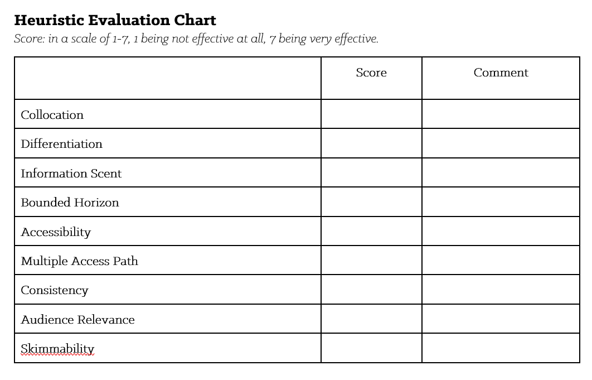

Parlay is a Seattle startup aiming to bring the design thinking process online for novice practitioners. They had built their MVP and was seeking our help on refining their product niche in the market.
As the project manager and UX researcher, I led a team of 3 to conduct extensive user research and proposed design to help refine the niche of Parlay in the market. From that, we designed Lumid, an update patch aiming to help novice UX practitioners develop innovative ideas through early design stage. We presented this project to Parlay and general audience at the HCDE Open House 2017, and received Excellence in Communication Award.
How can we help novice practitioners develop their innovative ideas using Parlay?
Using the 14 "design characteristics" we synthesized from the literature, we compared the thought process of design experts and novice practitioners, and identified the greatest shortcomings of novice practitioners. We then look at Parlay's features to see whether Parlay has a strong emphasis in supporting novice practitioners through such shortcomings. A total of 10 industry design experts and 10 novice practitioners were interviewed.
According to our finding below, while comparing to expert designers, novice practitioners were most lacking on being aware of design reasoning, project direction, and team participation. The product analysis of Parlay indicated that Parlay's features had a weak emphasis on supporting novice practitioners' shortcomings of "aware of reason", "aware of direction", and "team participation". Thus, novice practitioners would not be able to effectively use Parlay to generate innovative ideas.

1. Provide reasons for their design choice
2. Achieve team-wise understanding of team role/task contribution
3. Features to discuss and understand the contribution of each task to the project goal


How can we help novice design practitioners develop their innovative ideas through design thinking using Parlay?
1. Analyze Parlay's niche in the current market to see what works and what needs improvement
2. Thorough understand target users' needs, and how we can address their needs
We started the project by discussing the above objective with our client. We planned to achieve #1 objective by a comprehensive industry scan and analysis of the Parlay application, and #2 objective with extensive interviews with target users and industry design experts. Due to time constraints, we restrict our research in the early design process, as we believed (and later confirmed by literature) early design stage served as a foundation to the entire design process.
We started our research with a brief literature review to familiarize ourselves with concepts of design thinking. This also helped situate our later interview study design. From the literature review, we identified "design characteristics" defined by industry design experts. We believed this would be a great tool to help us compare expert and novice designers, and identified concrete ways to help novice designers.
Method
We proceeded to understand our target users and how to address their needs. Since Parlay is an online design thinking tool, we used industry expert designers as a reference to help identify what our target users are lacking in their design process. From that, we would analyze the Parlay application to see if it is supporting this knowledge gap. We would use data from expert designers and a comprehensive competitive product scan to inform any redesign proposal.

Participants
Due to time constraints, a total of 10 industry design experts (with more than 8 years of experience) were interviewed and 10 novice practitioners were interviewed.
Data Analysis
The interviews were transcribed and sorted into themes via affinity diagramming. The themes described what expert designers and novice practitioners do during early design process. We then aligned this with the "design characteristics" we found in the literature, identify the difference, and obtain actionable design ideas.
[INSERT TIME LAPSE]
According to our finding and the design characteristics, while comparing to expert designers, novice practitioners were most lacking on aware of design reasoning, project direction, and team participation.

The product analysis of Parlay indicated that Parlay's features had a weak emphasis on supporting novice practitioners' shortcoming of "aware of reason", "aware of direction", and "team participation". Thus, novice practitioners would not be able to effectively use Parlay to generate innovative ideas.

On top of identifying the shortcomings of novice practitioners, we also synthesized mental model of expert designers to inform the redesign of Parlay. Below are two example mental models.
Scoping Process
As agreed by all EDs, there are always limitations to what one can do. The limitations can be time, money, etc. After evaluating what one can do, one need to pick what they need to do, and refine their project goals. Below is a quick sketch of such thinking process.

Designer Intuition
Other often-mentioned words by the ED were “intuition“ and “justification“. Justifications referred to the reasons ED have for certain design decisions. These were factual information related to the project, e.g. physical constraints such as location of the design, or users’ preferences. "Intuition" stemmed from the belief that designers usually do not “design for themselves“. By having this belief, ED could effectively collect factual information related to the project (e.g. user research). Then, informing by the factual information, ED could define the goal and direction of the project.

Design opportunities
Drawing from the above findings, we identified the following design opportunities:
1. Help novice practitioners provide reasons for their design choice
2. Help novice practitioners achieve team-wise understanding of team role/task contribution
3. Help novice practitioners discuss and understand the contribution of each task to the project goal
We created mock ups to help us explain our proposal to our clients.
We presented our results to our clients and general audience at the HCDE Open House. Our clients were really pleased with the concrete design direction for Parlay. Due to the clarity of our design research, we were awarded the Excellence in Communication Award.